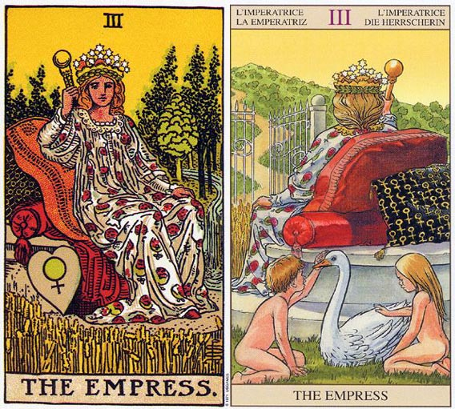

塔罗牌女皇（The Empress）解释
相关语：丰富 对应星象：金星
女皇 THE EMPRESS 代表丰硕的收获和爱心，意味着计划实现或是迈进一个新阶段。同时也代表家庭和谐。逆位的代表家庭或两性关系中出现困难，过度理性而无法将感性一方表现出来。
女皇牌暗示家庭和谐及稳定。这是一张对感情的描述十分积极的牌。女皇是完美到极致的女性，是孕育大地的母亲。牌面中洋溢着母性特有温柔的女皇手中拿着象征权力的权杖，她主管着生命的诞生、孕育和大地的丰收。她象征幸福的爱情、优越的物质生活，同时她也在警告人们，过于安逸的生活将导致奢侈和懈怠。
她是在有形世界心灵层面的显现，象征创造力和聪明才智，也是我们梦想与渴望的化身。拥有这张牌的人无论在事业还是感情上都坚持脚踏实地，并得到事业上的成功和充实的感情生活，踊跃的创新思维和杰出的思考能力使他们始终站在社会进步的前列。
女皇代表经由感官通往心灵的一条途径。她是激情甚于理想主义的。她的手腕以及分享性都相当务实，因为她知道无论她必须付出什么，现在都是她付出的最佳时刻。这正是占星学上天秤座所必须学习的部分课题。去学习爱并不是一种理想主义或知性上的习题，而是一种身体、情，以及感觉上的分享，以及日常生活中所经历到的喜悦。
她坐在富丽堂皇的座垫上，四周充满了生命。流水为草地和树木带来生机，而那些饱满的麦穗则暗示着生产力。而那些在女教皇牌中尚未成熟的种子，到了女教皇牌将则已成熟了，这意味着计划已成熟。
她座位底下的心形石头上画这一个圆圈和一个向下指的十字架；这是维纳斯的标志，她是天秤座和金牛座的守护神。这个符号代表透过爱，使
女教皇是一个梦想家，而女皇则属于脚踏实地的类型；高位的女教皇将爱梦想视为一件完美的事情，而女皇则深谙人性，了解要保持一段两性关系的完整性，时需要实际的努力的。她需要透过五种感官去体验这个世界，因为唯有如此，她才能从自己的经验当中去了解世界。这可不是一种脑力激荡而已，而是亲身感觉和经验到某些事。女皇代表的是热情。
和教皇一样，她头带三重王冠，代表圣父、圣子和圣灵。这象征有形世界中，心灵层面的显现。这张牌也暗示透过情感而的到满足和理解。
女皇（The Empress）牌面解读
美丽的女皇坐在优雅舒适的椅子上，四周一片茂密森林，令人有种无忧无虑，游闲自在的感觉，椅子旁还放著一颗心，似乎是她有心赐给你这些丰沃的土地和果子，圆满的爱，应该好好的谢恩了。
女皇（The Empress）正位释义
幸福，成功，收获，无忧无虑，圆满的家庭生活，良好的环境，美貌，艺术，与大自然接触，愉快的旅行，休闲。
繁荣、感情丰富、信仰坚定、心胸开阔、生活优雅、财运佳、公众人物、有魅力的女性、充实的爱、有结果的恋情、怀孕
这张牌代表脚踏实地的工作最终将得到事业上的成就，经过努力得到的经验将帮你在以后的成功路上走得更加顺利。感情上拥有优雅与毫不保留的爱，同伴侣的时光充满了感情和快乐，并拥有非凡的活力，它也可以形容怀孕。
女皇（The Empress）逆位释义
不活泼，缺乏上进心，散漫的生活习惯，无法解决的事情，不能看到成果，担於享乐，环境险恶，与家人发生纠纷。
平庸、任性、迷惑、内心动摇、不思进取、自负、傲慢、疲倦、浪费、虚荣心强、计划搁置、不良的男女关系、不孕、流产
工作中即便脚踏实地也无法达到要求，发现不足正在努力改正。感情上过于追求理想化，无法容忍有缺陷的感情。在家庭或两性关系中可能会遇到困难，关于孩子的问题上，它可能意味着流产、堕胎或生产。
大体上的意义
简单言之，女皇可能意味着实现计划，或朝向计划的下一个自然步骤迈进，亦即你又向目标靠近了一步。这张牌也可能暗示怀孕，如果牌上还有五角星九、或圣杯三，或一张以上的侍卫牌，那么这项推测的准确性就更高了。
女皇牌也可能暗示一趟乡野之旅，或是休息一阵子并重返大自然的怀抱，因为她四周围绕着自然的产物。透过亲近自然，现在是你重新平衡自己的时候。这张牌意味家庭状态的稳定与和谐，而这通常是透过把爱从思考当中，带往内心来达成的。
在有关事业的问题上，这张牌暗示你的工作和家有关，或利用家作为工作的基地。
倒立的女皇
女皇倒立意味家庭环境或某段两性关系中遭遇到的困难。可能你无法实现你的计划或在某段关系中，你没有办法打心里去爱，因为你对爱过于知性或理想化了。我要再说一次，你需要回到上一张牌正立时的状态，好精通蕴藏其间的课题。在这个例子里面，高位女教皇的理想主义干扰了对感情的体验。
它可能意味着，你是有了谈恋爱的念头，但却发现自己无法为两性关系，付出日复一日的努力。在关于孩子的问题上，女皇倒立可能意味流产、堕胎或生产。
在最近一个有关生产日期的问题（孩子已经超过预产期三天了），我在接下来的十天，每一天各选了一张牌（之所以是由我选牌，是因为这是一次电话分析。电话分析和面对面分析的不同处在于，你得要确认这个人的问题，并在选牌的时候代表他们去思考这个问题）。在礼拜四这天出现了倒立的女皇牌，暗示那个星期四，她就不再处于怀孕状态了，显然那就是她生产的日子，而果然她就在星期四早晨生产了。女皇牌倒立的另一层意思可说是，冷静地思考所有的选择之后，运用理性来解决问题。
两性关系上的意义
在两性关系分析当中，女皇暗示朝着两性关系的下一个自然阶段迈进。它也可能是在形容怀孕，因为孩子通常会使两性关系进入一个新的阶段。对和家庭观念有关的两性关系而言，这是一张相当积极的牌。在这段期间内，你和伴侣是透过感情和欢乐来贴近人生，而不是经由思想。在这段关系中，有更多的成长和活力产生。